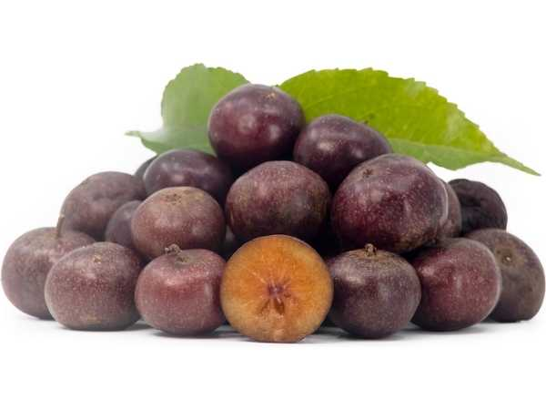

Flacourtia indica
Common Names: Governor's Plum, Madagascar Plum, Ramontchi, Indian Plum
Local Name: Sottai Karai (Tamil), Bilangra (Hindi)
Family: Salicaceae
Origin: Tropical Africa and Asia
Plant Type: Perennial deciduous to semi-evergreen thorny tree
Variety: Wild species with small dark red-purple fruit
Average Lifespan: 30–50 years
| Growth Habit | Small to medium thorny tree; often multi-stemmed; thorns on trunk and branches |
| Plant Size | 5–15 meters tall; canopy spread 4–8 meters |
| Leaves | Alternate, ovate to elliptic, 3–8 cm long, serrated margins, glossy green; new leaves reddish |
| Flowers | Small, greenish-yellow, without petals, in short axillary racemes |
| Flower Characteristics | Dioecious (separate male and female trees); inconspicuous; wind and insect pollinated |
| Fruit | Small round berry, 1–2.5 cm diameter, thin skin, juicy acidic flesh; tart when unripe, sweet-tart when ripe |
| Fruit Color | Green turning dark red to purple-black when ripe |
| Seed Characteristics | 4–10 small, hard seeds per fruit |
| Root System | Deep taproot with lateral spread; drought-adapted |
| Climate | Tropical to subtropical; tolerates dry conditions |
| Temperature Range | 20–38°C ideal; tolerates light frost briefly |
| Rainfall Requirement | 500–2000 mm annually; drought-tolerant |
| Soil Type | Adaptable; sandy, loamy, laterite soils |
| Soil pH Preference | 5.5–7.5 |
| Sun Requirement | Full sun to partial shade |
| Spacing | 5–8 meters between trees |
| Irrigation Method | Minimal; rain-fed in most regions |
| Water Requirement | Low; highly drought-tolerant |
| Can it Grow in Pots? | Young trees possible in large pots; eventually needs ground planting |
| Fertilizer Schedule | 1–2 times per year; minimal inputs needed |
| Recommended Organic Fertilizers | FYM, compost, leaf mould |
| Pesticide Frequency | Rarely needed; naturally hardy |
| Recommended Organic Pesticides | Neem oil if needed |
| Mulching Practice | Leaf litter provides natural mulch |
| Training System | Natural form; can be trained as hedge |
| Pruning Time | After leaf drop; remove thorny suckers |
| How to Prune | Remove lower thorny branches for access; thin canopy for light |
| Common Pests | Fruit fly, birds; generally pest-resistant |
| Common Diseases | Leaf spot, powdery mildew (rare) |
| Disease Prevention & Remedies | Good air circulation; minimal intervention needed |
| Flowering Months | March–May (with new leaf flush) |
| Fruiting Season | June–September; 60–90 days after flowering |
| Days to Harvest | 60–90 days from flowering |
| Harvest Indicators | Fruit turns dark red to purple-black; softens; sweet-tart flavour develops |
| Average Yield per Plant | 20–50 kg per tree per year (female trees only) |
| Pollination Type | Cross-pollination required (dioecious); wind and insect pollinated |
| Pollination Notes | Both male and female trees needed; 1 male per 8–10 females sufficient |
| Pollination Details | Dioecious species; male trees produce pollen, female trees bear fruit |
| Propagation by Seeds | Seeds germinate in 3–6 weeks; sex unknown until flowering (3–5 years) |
| Propagation by Cuttings | Root suckers and hardwood cuttings; allows sex selection |
| Propagation by Grafting | Cleft grafting on seedling rootstock for known female plants |
| Water Usage | Very low; thrives in dry conditions |
| Soil Conservation Practices | Deep roots prevent erosion; useful for wasteland reclamation |
| Organic Practices Used | Zero-input crop in most settings |
| Companion Plants | Other native trees; used in agroforestry systems |
| Biodiversity Benefits | Fruit supports birds and wildlife; thorny habitat for nesting birds |
| Commercial Production Regions | India, East Africa, Madagascar, Southeast Asia (mostly wild-harvested) |
| Market Uses | Fresh fruit, preserves, hedging, timber |
| Processing Uses | Jams, jellies, pickles, wine; wood used for tool handles |
| Market Value (Approx.) | ₹30–80 per kg (local markets); mostly foraged |
| Symbolism | Traditional wild fruit in Indian and African cultures; associated with rural foraging |
| Traditional Uses | Bark used in traditional medicine for snakebite and skin diseases; fruit eaten fresh or preserved |
| Calories | 52 kcal per 100g |
| Dietary Fiber | 2.0 g per 100g |
| Vitamin C | 18 mg per 100g |
| Vitamin A | Trace amounts |
| Iron | 0.8 mg per 100g |
| Potassium | 180 mg per 100g |
| Antioxidants | Anthocyanins, phenolic acids, tannins |
| Other Key Nutrients | Calcium, phosphorus, organic acids |
| Anxiety & Sleep | Not a primary use |
| Immune Support | Vitamin C and antioxidants provide moderate immune support |
| Anti-inflammatory Properties | Bark extracts show anti-inflammatory and antimicrobial activity |
| Heart Health | Antioxidants may support cardiovascular health |
| Digestive Health | Ripe fruit aids digestion; bark decoction used for intestinal complaints |
Disclaimer: Information provided is for educational purposes only and not a substitute for medical advice.
Add your field observations here.